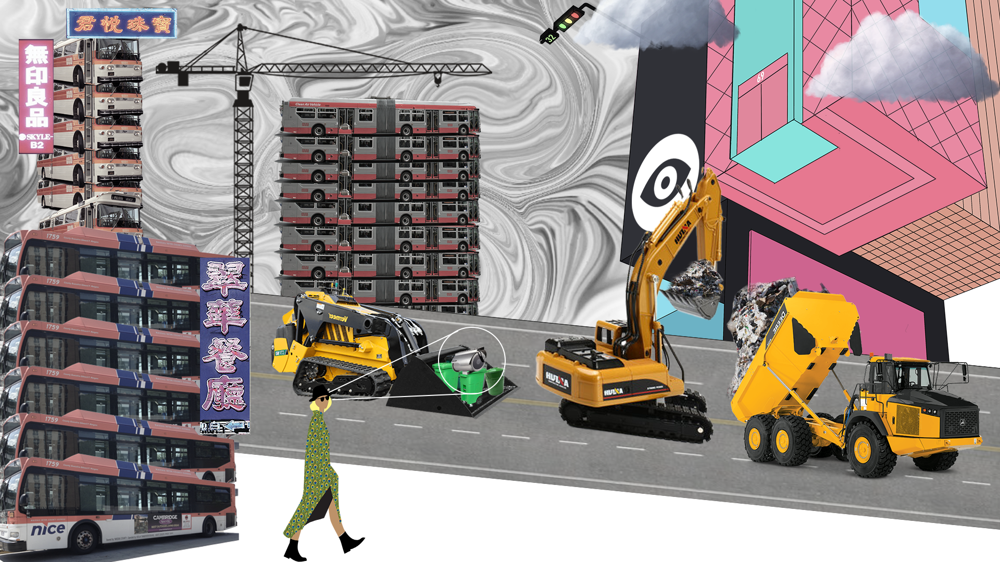
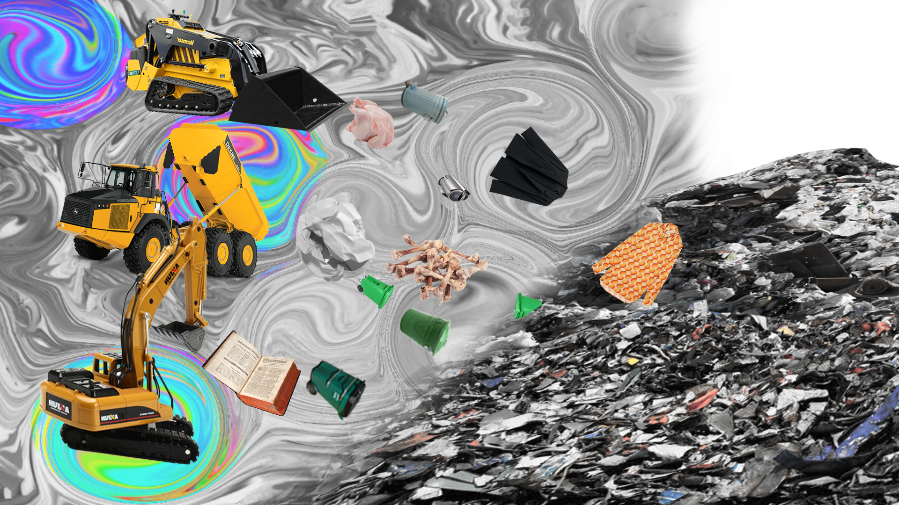
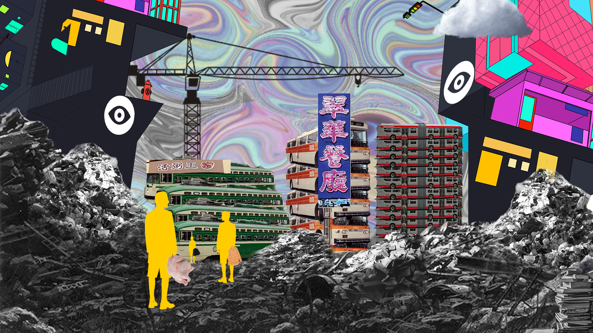
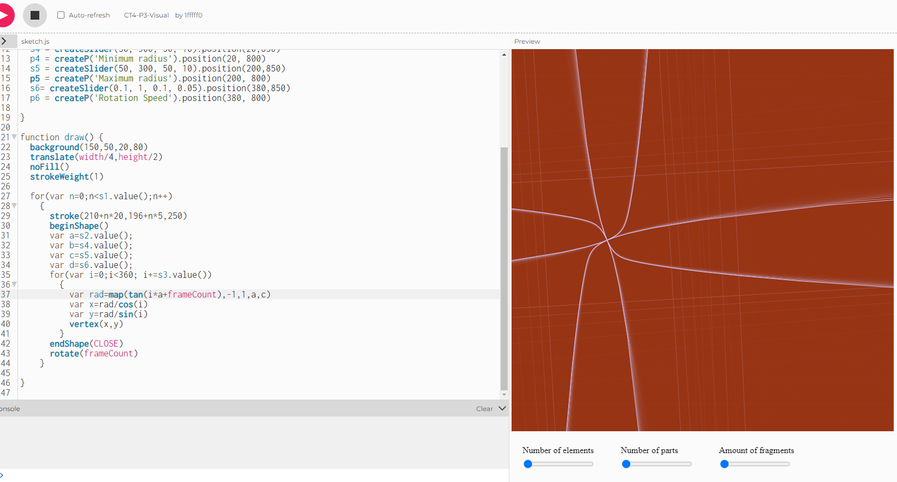

Fall 2021
Techno-Kludging
Social Phobia Flashing
Interactive technologies application where we are concerned with dynamic experiences and behaviors
The installation is mainly composed of distance sensor and LED strip. When there is no person or object near the installtion, the installtion will maintain constant light. However, when someone approaches, the installation will flash continuously. Use this to express the emotional fluctuation when social fear meets the need to socialize
Inspiration
Insipred by interactive clothing project made by Benhaz Farahi.

Process


Simulation & Design
Blowing Simulation
Simulations allows us to create a vivarium: a micro-world where a defined set of properties and behaviors are placed and developed
This project simulates the overload system caused by blowing wind in unity, showing the rapid change and renewal of cities. Cities change from scattered to clustered, simple to complex, and finally rapidly renew under the influence of man-made objects.
Process


Synthetic Relationships
The Mad Queen of the Planet Ada
This project constructed two electronic beings capable of percieving some aspects of the environment around them.Sensors were used to create their "worldview."
The project uses the cloud to transmit data to reflect a planet ruled by the Queen's emotions. When the queen is in a bad mood, the red light will light up, when the queen is in a good mood, the green light will light up, and when she is in a general mood, the yellow light will light up.

Process


Computational Aesthetic
Vaporwave Shader Show
Shaders are a set of instructions, but the instructions are executed all at once for every single pixel on the screen.
This project uses the shader created by glsl to represent the common elements of steam wave style, and then simulates it in unity through the translation of glsl and HLSL. The steam wave show on TV shows the patterns and awakens people's nostalgia at the same time.
Process


The Parade Town
A Parade of Leisure

The main purpose of this parade is to make use of AR technology to let people in downtown Los Angeles hold a red balloon during the journey. Through the creation of bright color of the red balloon and distorted atmosphere, it can awaken people's nostalgia and alleviate people's anxiety in the fast-paced life. When people rush to their destination, they have a feeling of escape and peace.
Click to see: Here!
City Re-construction
Surveillance Bus City
The city is surveillaned, the lower class lives in the bus, the upper class has the ability not to be surveillaned, one day, a lady was mistakenly recorded in the monitoring machine due to the operation error, and the story started...



Imaginaries of Work
Robot Co-working
The idea of coworking with robots has become a controversial topic in the future work environment. In our proposal, we use the future restaurant as a platform to talk about the emotional relationship and coworking experience between robots, chefs, waiters, and clients. In a highly automated artificial intelligence restaurant, how will coworking change the working environment in the future? We listed different speculative scenarios: Barista’s robotic arm, Robots restaurant hiring human labor, Automotive water filling, and chief with robots in the kitchen. We use video editing and collaging as a tool to present the scene not only to show the future working possibilities but also leave possible problems when humans work with robots for the audience to imagine. This project encourages the audience to rethink future coworking possibilities and issues when robots become an essential part of our work environment.
SUPERPOWER
DO YOU REALLY REMEMBER IT?
DO YOU REALLY REMEMBER IT? lies in exploring how to achieve a superpower that alters the memories of others. Memories seem to be private and difficult to change easily through outside intervention, and in this superpower is going to be realized without actively interfering with the participant, in the premise that the participant subjectively perceives the environment, but still can change the participant's memory.
This project tries to achieve the superpower by building an interactive experimental virtual space that works with people through Google Cardboard. In this experiment, visual media such as images and videos are of great significance for memory change, while the perception of the environment is also the starting point for how a person constructs a memory palace. The project examines how people remember certain spaces by interviewing random peers, trying to identify important pieces of their memory palaces and how they can modify them to change their memories. The virtual space will build their memory palace based on the interview transcripts and reconstruct the space by replacing some of the important pieces, environment and senses as the experiencer walks into the space, gradually feeling their memories being constantly influenced as they interact with the virtual space.
Process

The Web as a RubeE Goldberg Machine
Little Emoji

Based on structure of Rube Goldberg's machine, how can we build a similar system in the digital domain? With two apis, TheMealDB andEmojiHub , we created a fictional Emoji character on a web page who loves meat and hates vegetables. The user can "prepare a meal" to them, and the little Emoji will react accordingly to the type of meal and their own preferences. Check the web page here.
Digital Twins
Controller
This project collects ourselves' data as dataset to create a 'digital twin' in the digital world.

The model is trained via Teachable Machine, and edited via P5.js, in which can use the data model to control the pattern on the screen.
Click to play on P5.js: Here!